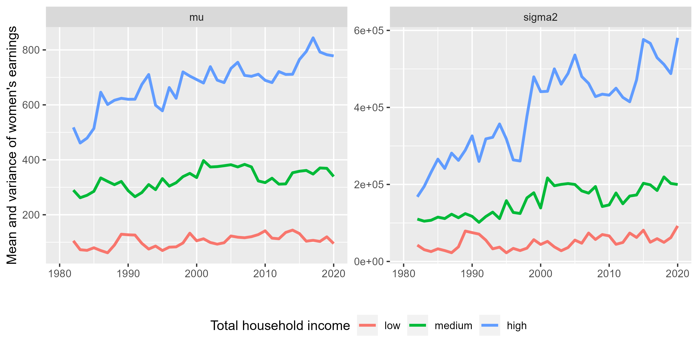
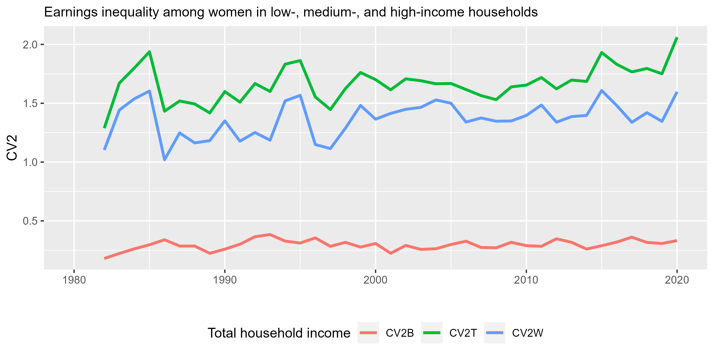
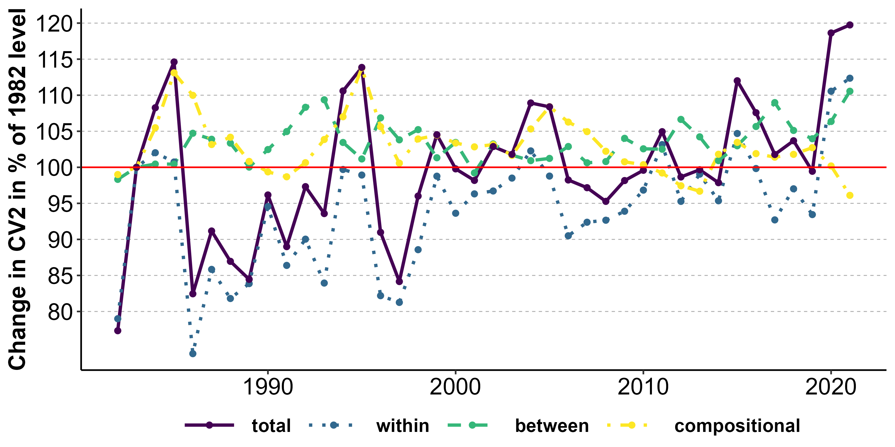
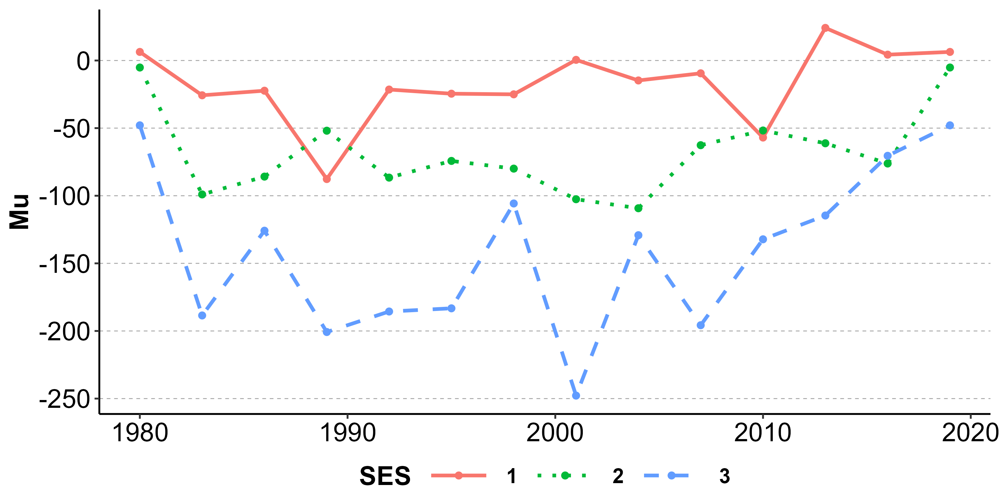
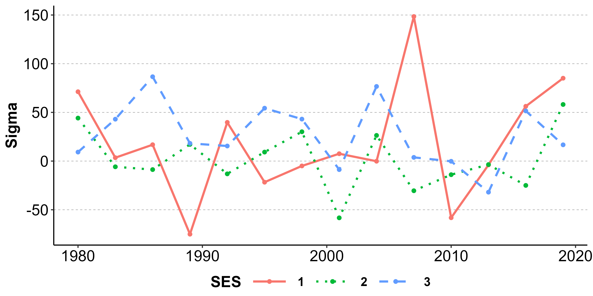
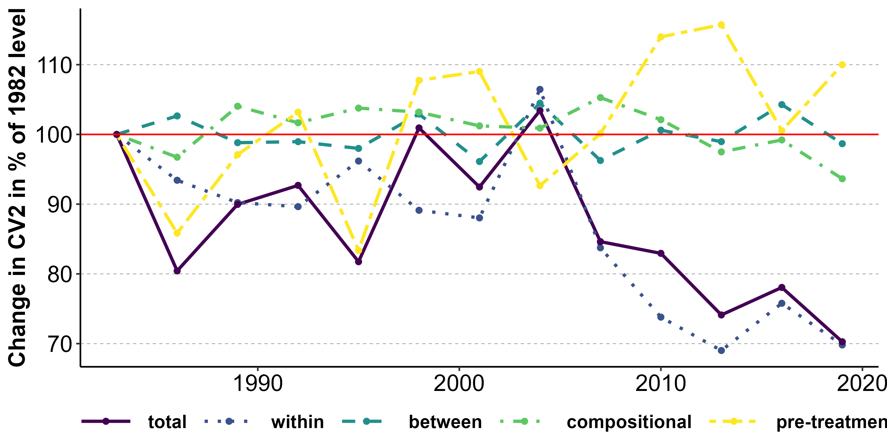

I provide two examples on how the ineqx can be employed to study inequality
The R file of this example can be found here.
In this first example, I demonstrate how the ineqx package can be used (1) to split the inequality in an outcome between groups into within- and between-group components and (2) to track changes in the within- and between-group components over time.
First, I load a reduced version of the Current Population Survey (CPS) containing a subsample of all women in CPS with information on their motherhood status and earnings between 1982 and 2022.
In this dataset, women are grouped into low, medium, and high economic position by the total annual income of the household they lead or belong. They cutoff points are the 20 and 80 percentiles in each year.
Let us now calculate how much inequality there is within and between those groups:
dat.wibe <- wibe(y="earnweekf", group = "SES", time = "i.year", weights = "earnwtf", long=T, dat=cps_sample)The wibe() function takes the information on outcome (y), grouping structure (group), and time variable (time) to calculate within-group, between-group, and total inequality in each year. It returns two dataframes. The first dataframe contains the number of observations, the mean and variance of the outcome for each group and each year. The second dataframe returns the resulting within-group, between-group, and total inequality.
Let us first plot the mean and variance of women’s earnings by economic position over time:
ggplot(data=
dat.wibe[[1]] %>%
dplyr::filter(variable %in% c("mu", "sigma2")),
aes(x=year, y=value, color=factor(SES, labels = c("low", "medium", "high")))
) +
facet_wrap(.~ variable, scales = "free_y") +
geom_line(size=1.1) +
scale_x_continuous(limits = c(1980, 2020)) +
labs(x="", y="Mean and variance of women's earnings", color="Total household income") +
theme(legend.position = "bottom")
The ensuing development of within and between-group inequality over time:
ggplot(data=
dat.wibe[[2]] %>%
dplyr::filter(variable %in% c("CV2W", "CV2B", "CV2T")),
aes(x=year, y=value, color=factor(variable))
) +
geom_line(size=1.1) +
scale_x_continuous(limits = c(1980, 2020)) +
labs(x="", y="CV2", subtitle = "Earnings inequality among women in low-, medium-, and high-income households", color="Total household income") +
theme(legend.position = "bottom")
Instead of the variance, I ask for the squared coefficient of variation as measure of inequality (\(CV^{2}=\sigma^{2}/\mu^{2}\)), which equals the variance divided by the squared mean. This is preferable when decomposing variation into within- and between-group components to not have the group with the highest income dominate the decomposition.
We can see that women in low-, medium-, and high-income households differ much more within each group than between. For men, it is the other way around (not shown).
Finally, let us analyze the degree to which inequality has been changing due to
dat.ineqx1 <- ineqx(y="earnweekf", ystat="CV2", group = "SES", time = "i.year", weights= "earnwtf", ref=1983, dat = cps_sample)
#> Performing decomposition ...
#> Done.
plot(dat.ineqx1, type = "dT", yint = 2) +
geom_hline(yintercept=100, color="red") +
scale_y_continuous(breaks=seq(80,140,5)) +
labs(y="Change in CV2 in % of 1982 level") 
We can see that inequality in women’s earnings increased by 35% between 1980 and 2020. We can also see that group-compositional changes only played a minor role in this change. While between 1980 and 2008, increases in within- and between-group inequality contributed to overall inequality similarly, since 2008, the increase in within-group inequality is noticeably higher.
The R file of this example can be found here.
Let us now find out how the changing impact of motherhood on women’s earnings has contributed to this development.
To perform a causal variance decomposition, we specify three additional arguments:
treat="mother")post="byear") to estimate the difference in differences (optional)decomp="effect") or the change in post-treatment inequality due to treatment (decomp = "post") is to be analyzedSince motherhood is not random, I add several important controls to substantiate the treatment effect estimates: family size, married, single, age, education, race, and an interaction of byear, mother, and age (bym_age).
In order to speed up estimation, we useyear3 as time variable, which splits years in three-year intervals and estimate an effect for each value of year3. This is done with i.year3 (adapted from Stata). We could have also specified a linear effect with c.year, or a B-splines of degree 3 with c3.year.
dat.ineqx2 <- ineqx(y="earnweekf", ystat="CV2", group = "SES", time = "i.year3", treat="mother", post="byear", decomp="post", weights= "earnwtf", ref=1983, dat = cps_sample)
#> Running variance function regression ...
#> GAMLSS-RS iteration 1: Global Deviance = 7685936572
#> GAMLSS-RS iteration 2: Global Deviance = 7685904851
#> GAMLSS-RS iteration 3: Global Deviance = 7685904851
#> GAMLSS-RS iteration 4: Global Deviance = 7685904851
#> Computing average marginal effects ...
#> Performing decomposition ...
#> Done.Let us first look at the treatment effect estimates on mean and variance by group over time
plot(dat.ineqx2, type = "dMuP") 
plot(dat.ineqx2, type = "dSigmaP")
We can see that the effect of motherhood on mean earnings hasn’t changed much over time. The effect of motherhood on the variance, however, has decreased over time, especially for women in medium- and high-income households.
The ensuing consequences for post-birth inequality can be plotted with plot(ineqx.obj, type="dT"):
plot(dat.ineqx2, type = "dT", yint = 2) + # ggplot object
geom_hline(yintercept=100, color="red") +
labs(y="Change in CV2 in % of 1982 level")
As detailed in the Rosche (202X), the ineqx package splits the total effect of treatment on inequality into
Our analysis shows that the effect of motherhood on earnings inequality among women has decreased between 1980 and 2020. While pre-treatment, compositional, and between-group effect have not changed dramatically, changes in earnings following motherhood have brought women’s earnings within each income group closer together in the last decade.
These results comes quite close to the results presented in Rosche (202X) in which the full CPS dataset and a more thoughtful identification approach is used.